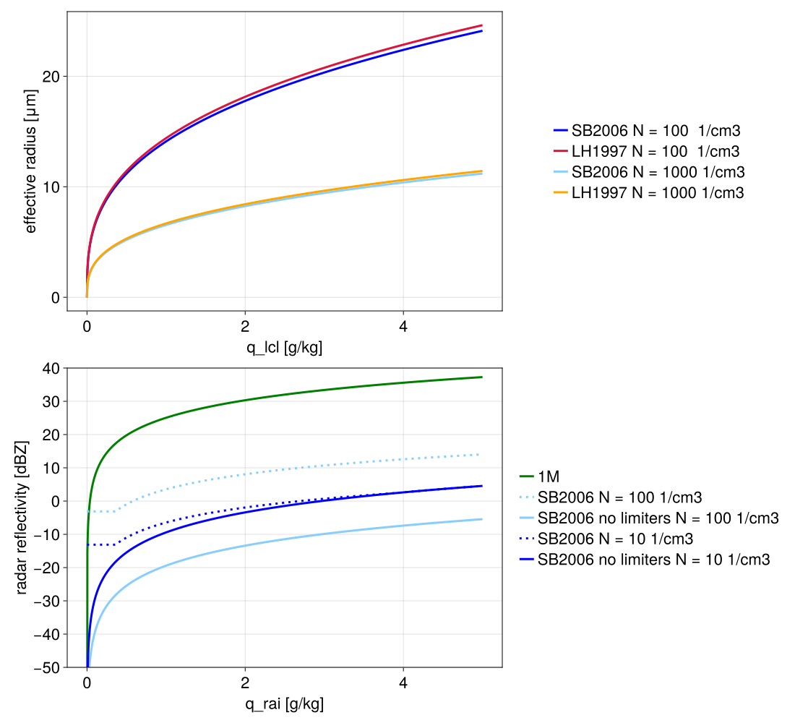

Diagnostics
CloudMicrophysics.jl offers a couple of options to compute cloud and precipitation radiative properties based on different available parameterizations and their underlying assumptions about the size distribution and properties of particles.
Available diagnostics are:
- Radar reflectivity
- Effective radius
Calculating these diagnostics make use of the physical moment equation for the generalized gamma distribution, as a function of particle mass. We denote the moment as $M_x^n$ to emphasize that it is the moment with respect to the particle size distribution written as a function of particle mass $x$.
\[\begin{equation} M_x^n(;N, ν, μ, B) = ∫_0^∞ x^n ⋅ f(x) dx = N ⋅ B^{-\frac{n}{μ}} ⋅ \frac{Γ\left(\frac{ν+1+n}{μ}\right)}{Γ\left(\frac{ν+1}{μ}\right)} \end{equation}\]
where:
\[\begin{equation} f(x) = A ⋅ x^ν ⋅ \exp(-B ⋅ x^μ) \end{equation}\]
is the particle size distribution as a function of particle mass, and
\[\begin{equation} B = \left( \bar{x} \frac{Γ\left(\frac{ν+1}{μ}\right)}{Γ\left(\frac{ν+2}{μ}\right)} \right)^{-μ} \end{equation}\]
is the particle size distribution parameter, in which $\bar{x} = L/N$ is the mean particle mass. See the particle size distribution section in Microphysics 2M for more details.
Radar reflectivity
The radar reflectivity factor $Z$ is used to measure the power returned by a radar signal when it encounters particles (cloud, rain droplets, etc), and is defined as the sixth moment of the particles distributions $n(r)$:
\[\begin{equation} Z = {\int_0^\infty r^{6} \, n(r) \, dr}. \label{eq:Z} \end{equation}\]
$Z$ is typically normalized by radar reflectivity factor $Z_0$ of a drop of radius $1 mm$ in a volume of $1 m^3$, and is reported as a decimal logarithm to obtain the normalized logarithmic rain radar reflectivity $L_Z$.
\[\begin{equation} L_Z = {10 \, \log_{10} \left( \frac{Z}{Z_0} \right)}. \end{equation}\]
The resulting logarithmic dimensionless unit is decibel relative to $Z_0$, or $dBZ$.
1-moment microphysics
For the 1-moment scheme we only consider the rain drop size distribution. Integrating over the assumed Marshall-Palmer distribution leads to
\[\begin{equation} Z = {\frac{6! \, n_{0}^{rai}}{\lambda^7}}, \end{equation}\]
where:
- $n_{0}^{rai}$ and $\lambda$ - rain drop size distribution parameters.
2-moment microphysics
For the 2-moment scheme we take into consideration the effect of both cloud and rain droplets. The radar reflectivity, as written above is proportional to the 2nd moment cloud number distribution in mass
\[\begin{equation} Z_c = M_x^2 / C^2 \end{equation}\]
where:
- $C = \frac{4}{3} π ρ_w$.
The additional factor of $C^2$ results in a radar reflectivity that equals the 6th moment in radius.
Similar for rain drop exponential distribution
\[\begin{equation} Z_r = M_x^2 / C^2 \end{equation}\]
The final radar reflectivity factor is a sum of $Z_c$ and $Z_r$.
Effective radius
The effective radius of hydrometeors ($r_\text{eff}$) is defined as the area weighted radius of the population of particles. It can be computed as the ratio of the third to the second moment of the size distribution.
2-moment microphysics
We compute the total third and second moment as a sum of cloud condensate and precipitation moments:
\[\begin{equation} r_{eff} = \frac{M^3_{r,c} + M^3_{r,r}}{M^2_{r,c} + M^2_{r,r}} = \frac{∫_0^∞ r^3 \, (n_c(r) + n_r(r)) \, dr}{∫_0^∞ r^2 \, (n_c(r) + n_r(r)) \, dr}. \label{eq:reff} \end{equation}\]
The 3rd moment in radius, $M^3_r$ equals the 1st moment in mass, $M^1_x$,
\[\begin{equation} M^3_r = M^1_x / C \end{equation}\]
where
- $C = \frac{4}{3} π ρ_w$ relates radius to mass for a spherical particle, $x = C r^3$.
Similarly, the 2nd moment in radius, $M^2_r$ equals the "2/3rd" moment in mass, $M^2_x$,
\[\begin{equation} M_r^2 = M_x^\frac{2}{3} / C^\frac{2}{3} \end{equation}\]
Liu and Hallett 1997
For 1-moment microphysics scheme the effective radius is parameterized following [57]:
\[\begin{equation} r_{eff} = \frac{r_{vol}}{k^{\frac{1}{3}}}, \end{equation}\]
where:
- $r_{vol}$ represents the volume-averaged radius,
- $k = 0.8$.
Where the volume-averaged radius is computed using
\[\begin{equation} r_{vol} = \left(\frac{3}{4 \pi \rho_w}\right)^{\frac{1}{3}} \, \left(\frac{L}{N}\right)^{\frac{1}{3}} = \left(\frac{3 \rho (q_{lcl} + q_{rai})}{4 \pi \rho_w (N_{lcl} + N_{rai})}\right)^{\frac{1}{3}}, \end{equation}\]
where:
- $L = \rho q$, is the liquid water content (cloud water and rain),
- $N = N_{lcl} + N_{rai}$.
By default for the 1-moment scheme we don't consider precipitation and assume a constant cloud droplet number concentration of 100 $cm^{-3}$.
Constant
For testing purposes we also provide a constant effective radius option. The default values are 14 $\mu m$ for liquid clouds and 25 $\mu m$ for ice clouds, and can be easily overwritten via ClimaParams.jl.
Example figures
Below we show effective radius and radar reflecivity plots as a function of cloud water and rain water. The effective radius is computed assuming a constant cloud droplet number concentration of 100 or 1000 per cubic centimeter. The radar reflectivity is computed assuming a constant rain drop number concentration of 10 or 100 per cubic centimeter. Note the effect of using the limiters in SB2006 scheme on the radar reflectivity.
include("plots/CloudDiagnostics.jl")CairoMakie.Screen{SVG}
